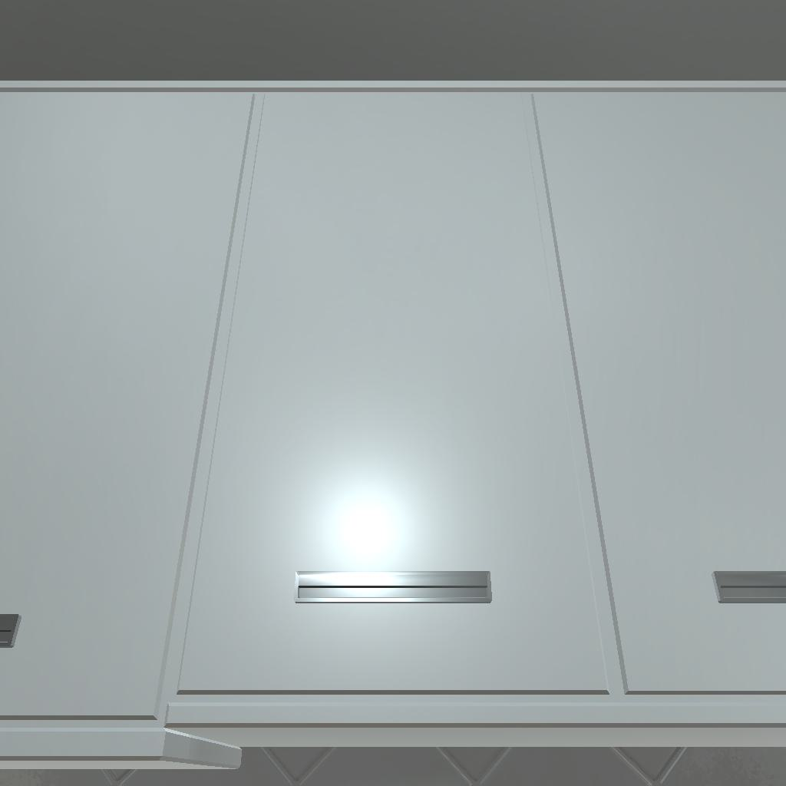

---------------------------------------------------------task: 12---------------------------------------------------------
--------------------------------------------------------------------------------------------------------------------------------------------------------------------
--------------------------------------------------------------------------------------------------------------------------------------------------------------------
Step:--------------------------------------------------------------------------7-------------------------------------------------------------------------------
----------------------------------------
VLM Prompt:
Image1:
Image2:
Image3:
**Instruction**
1. Analyze the provided images to identify all visible household objects and compare the difference between images (e.h. whether the object is opened or not and taken on hand or not), focusing on those relevant to the task description "clean some tomato and put it in countertop."
2. Use the analysis of images and the task hint "The agent must find an object of the desired type, pick it up, go to a sink or a basin, clean the object with a sink or basin, and then find the correct location to place it and put it down there. The agent does not need to use soap bottle or faucet to clean the object, and the agent just needs to do action that is "clean the object with the sink or sink basin"." to answer the question: what is the most reasonable action in the choices for the task description "clean some tomato and put it in countertop"?
3. Decide and write the answer using the template: The answer is: (i): , where i is the real number. If there is no desired object in images, search every place based on **Initial Observation** to find the object. And if no one is exactly correct, choose a similar answer.
**Initial Observation**
You are in the middle of a room. Looking quickly around you, you can see cabinet (1-6), microwave (1), countertop (1-2), coffeemachine (1), toaster (1), sink (1), sinkbasin (1), fridge (1)
**Answer Choices**
(1): go to cabinet 1
(2): go to cabinet 3
(3): go to microwave 1
(4): go to cabinet 4
(5): go to cabinet 5
(6): go to cabinet 6
(7): go to countertop 1
(8): go to coffeemachine 1
(9): go to toaster 1
(10): go to countertop 2
(11): go to sink 1
(12): go to sinkbasin 1
(13): close cabinet 2
(14): take bowl 1 from cabinet 2
(15): examine cabinet 2
**Answer**
Let's think step by step by following the instructions.
----------------------------------------
----------------------------------------
Original Response:
Image Analysis:
- Image 1 shows a dark room with a cabinet (presumably cabinet 2) that has its door open. On the shelves, there are two objects that appear to be an apple and a potato but no tomato.
- Image 2 and Image 3 show the same scene from slightly different angles. They both depict a part of the cabinet (could be cabinet 1 or 2) with closed doors and no visible objects inside or outside.
Comparison of Images:
- There is no visible change in the state of the objects or cabinets between Image 2 and Image 3. The cabinet doors appear closed in both images.
- Image 1 shows an open cabinet with some objects inside, but no tomato is visible.
Action Analysis Based on Task Description:
For the task "clean some tomato and put it in countertop," the first step is to find a tomato. Since no tomato is visible in the provided images, the agent must search the cabinets. Cabinet 2 is already open and does not contain a tomato, so we can eliminate options related to cabinet 2 (13, 14, 15). The agent should then check the other cabinets where a tomato might be stored.
The most reasonable action for the agent to take next would be to go to cabinet 1 (option 1), as it is usually the first place to check for food items in a kitchen, and it has not yet been checked according to the initial observation and the provided images.
The answer is: (1): go to cabinet 1.
----------------------------------------
----------------------------------------
>>> Refine Original VLM Response and Get Pure Action: go to cabinet 1
----------------------------------------
-----------------------------------------------------------------
Running time: 17.862375736236572 seconds
Total Money: 6.481840000000007
-----------------------------------------------------------------
-----------------------------------------------------------------
Text Observation:You arrive at loc 0. The cabinet 1 is closed.
-----------------------------------------------------------------
UNSUCCEED